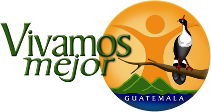
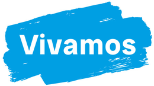
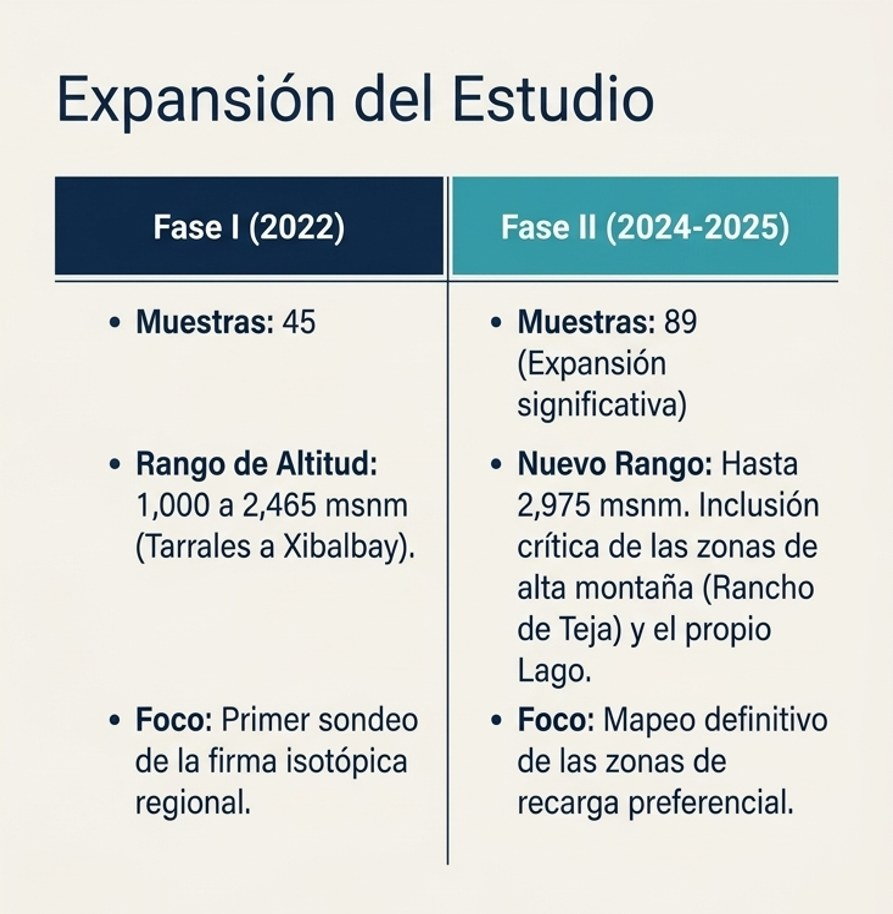

Paisajes Resilientes
Cargando capas de datos…

Paisajes resilientes y biodiversidad en la subcuenca del río Quiscab y el corredor biocultural Zunil – Atitlán – Balam Juyu' (Acatenango).

Panorama General
Cargando datos del territorio…
Cobertura forestal
Bosque Mixto
Bosque Estacionalmente Seco
Bosque Coníferas de Altura
Bosque Latifoliado
Capas ▾
Capas del mapa
🔗
✕
Claro
Satélite
Topográfico

Expansión del Estudio
Isótopos · Fase I vs Fase II
Link copiado al portapapeles
✕